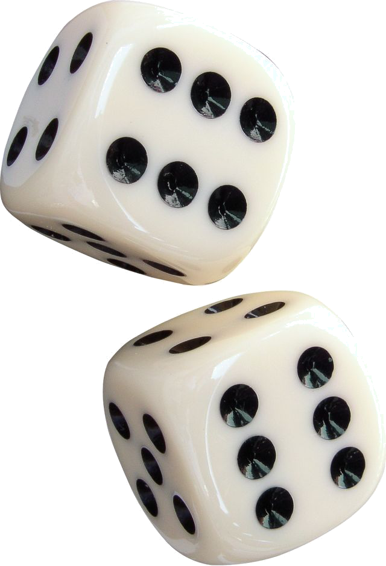
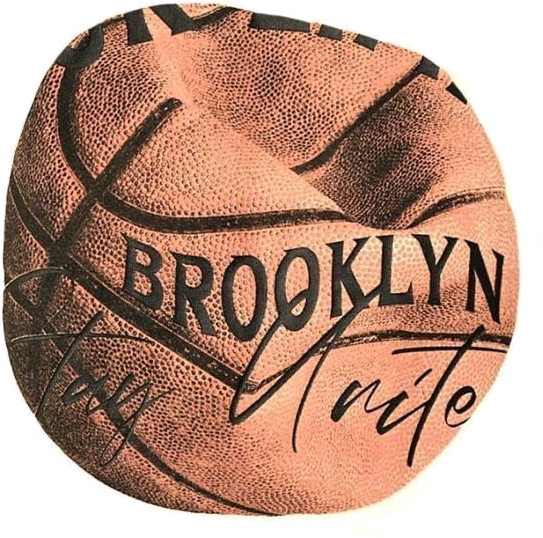
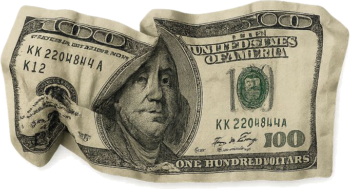

Personal Portfolio
This is what you're looking at. I designed the site to look like a desktop to make my portfolio feels more fun. Learn more in each folder!
HTML/CSS
selected work
This is what you're looking at. I designed the site to look like a desktop to make my portfolio feels more fun. Learn more in each folder!

Built a model to study which sepsis patients may be at higher risk of cardiac arrest by engineering clinical features and testing predictive patterns in healthcare data.

Used k-means clustering to group NBA players into different play styles based on their performance metrics, then visualized what made each archetype distinct.

Explored whether investor sentiment, using the Fear & Greed index, could help explain future market movement and how that relationship changes during volatile periods.